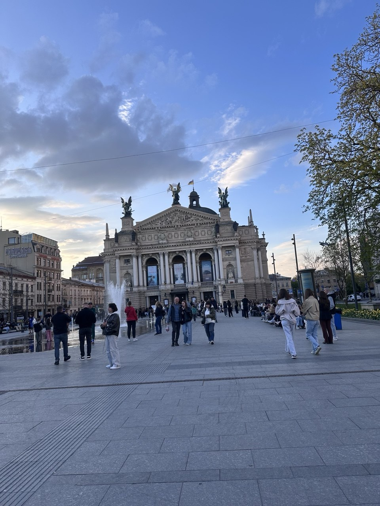

Загальна інформація

Коротка характеристика: Культурна столиця України, місто з давньою історією, витонченою архітектурою та неймовірною кавовою культурою.
Чому це місто у моєму списку: Це моє рідне та найближче серцю місто. Я жила у Львові, а зараз мешкаю зовсім поруч і буваю тут щодня. Для мене це не просто туристична локація, а дім, де кожен куточок та вуличка пов'язані з особистими спогадами.
Цікаві факти
- Історичний центр Львова занесений до Світової спадщини ЮНЕСКО.
- У Львові розташована найбільша кількість пам'яток архітектури в Україні.
- Місто славиться своїми культовими кав'ярнями, шоколадницями та затишними брукованими вуличками.
Визначні місця
- Площа Ринок та міська Ратуша
- Львівський національний академічний театр опери та балету
- Парк «Високий Замок» з оглядовим майданчиком
- Затишні вулички Старого міста
Особиста оцінка
Оцінка: 10/10 — рідне місто, яке надихає щодня.
Дізнатися більше: Львів у Вікіпедії